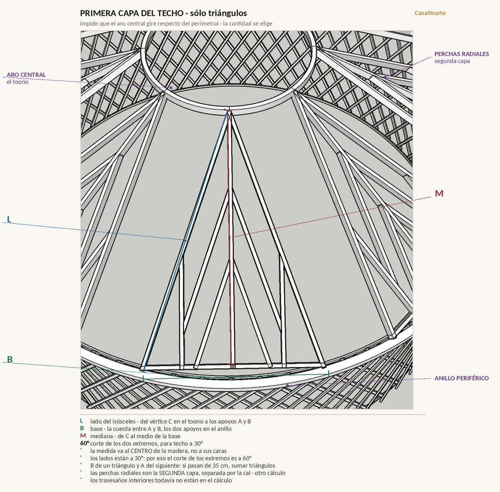

Cálculos
Un cálculo por cliente, guardado y accesible. Antes hacías una planilla para cada uno: esto es lo mismo, con las medidas ya verificadas contra el modelo.
—
Cargando el 3D…
Las medidas que se deciden. Todo en metros, salvo los ángulos. Al tocar una medida, en el 3D se resalta lo que cambia con ella.
El borde dibujado con las medidas de este cálculo. Cada dibujo tiene todas sus piezas a la misma escala, y la escala se ajusta sola para que entre: cambiá una medida y el dibujo cambia de forma.
La cabeza del muro
El pie del muro y el piso
La altura del muro se toma del piso terminado a la cabeza del trei. La escuadra y los tornillos van esquemáticos. Los triángulos no se dibujan: se marca su apoyo.
Las letras de los resultados son las de estas dos láminas.

A aislación comprimida · E ancho del anillo · S y P los listones del borde · H altura de aislación · T del anillo al zócalo del trei.

L el lado del isósceles · B la base, que es la cuerda · M la mediana. Los tres se miden al centro de la madera.